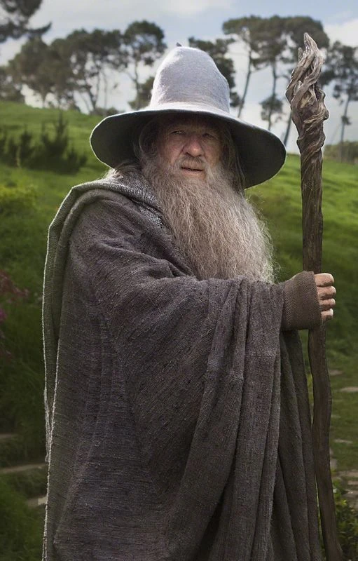
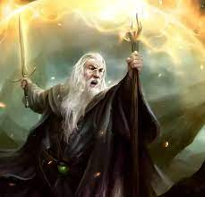
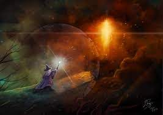
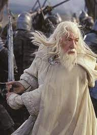
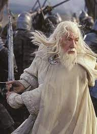

Biography

Gandalf, a powerful wizard in J.R.R. Tolkien's Middle-earth, was part of the Istari, sent to aid against Sauron's rise. Known for his wisdom, wielding a staff and a ring of power, he guided the Free Peoples against darkness.
Initially named Olórin, he assumed the form of Gandalf, donning a grey cloak and traveling Middle-earth's expanse. His counsel guided Bilbo and Frodo Baggins on their quests, playing a pivotal role in the defeat of Sauron.
Gandalf's wisdom, magic, and resilience were evident in his battles against Balrogs, aiding Rohan and Gondor, and unifying races against Mordor. His iconic phrase "You shall not pass!" echoes in the Mines of Moria.
Despite his vast power, Gandalf's humility and care for Middle-earth defined him, fostering hope and courage. After fulfilling his mission, he departed with the Elves, leaving behind a legacy of valor, wisdom, and an undying spirit in the annals of Middle-earth.
Appearance
Gandalf appears as an aged, yet vigorous wizard with a long beard of flowing white or grey, often tucked into his belt. He's usually clad in robes, wearing a wide-brimmed, pointed hat atop his long, tangled hair. His piercing, bright eyes hold a spark of wisdom and power, often twinkling with mirth or seriousness as the situation demands. He carries a staff, which serves as both a symbol of his status and a tool for his magical abilities. His stature exudes an air of authority, while his weathered face tells tales of countless ages and experiences. Gandalf's presence commands respect, embodying both the humble wanderer and the mighty guide of Middle-earth.
Powers and Abilities
  

As a wizard, Gandalf's magical power is in light and fire, which he is able to manipulate by casting beams of light, starting and directing fires, and more. Although he is very powerful magically, his power does have its limits.